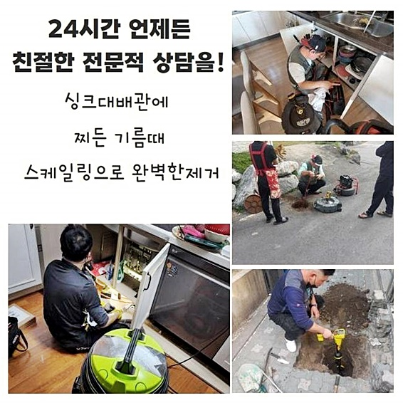
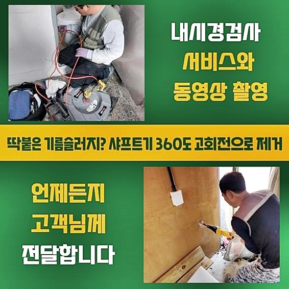
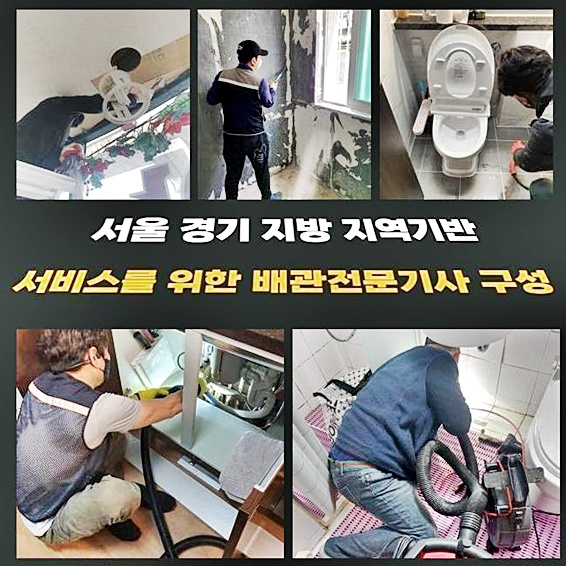
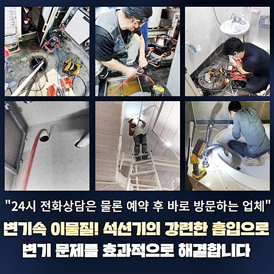
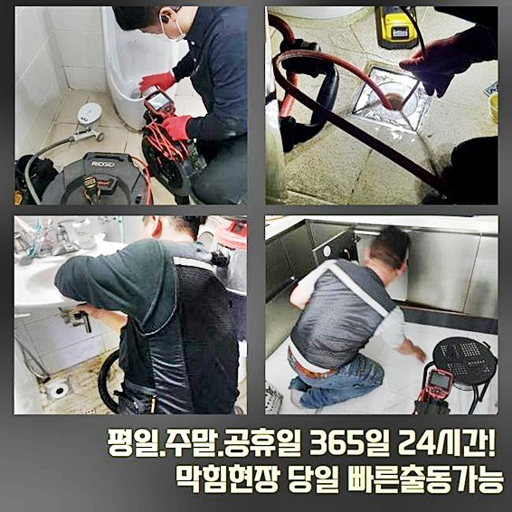
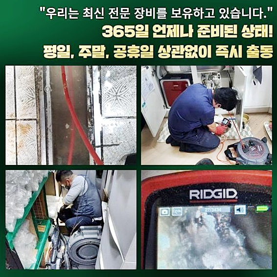

🏠 광주 태전동싱크대배수관막힘 초월읍 하수구청소 설비출장
용인시 처인구 배관막힘 전문 시공 후기

📋 작업 개요
- 위치: 용인시 처인구, 수원시 영통구, 화성시 동탄
- 서비스 유형: 배관막힘, 하수구청소, 내시경점검
- 작업 일시:
- 업체명: 하수구수사대 (010-5615-2118)
🔍 문제 상황
광주 태전동싱크대배수관막힘 초월읍 하수구청소 설비출장
집에서 배수관련 문제가 야기돼도 난감한 상황에 빠지지만 지속적으로 수십수백이 다녀가는 상업시설에서 막혀버리는 사태가 벌어지면 안전한 작업들이 필요하겠죠?
금일 증상도 신속한 출장으로 해결해드렸는데요
상가라 함은 일반적으로 거주지나 영업점 음식점과같이 다양하게 밀집되어있어 배수장애가 생기게 될 시 단순하게 불편한게 아닌 직접적인 제약으로 발전됩니다
이와같은 피해들을 최소화할 목적으로 조속하게 문제의 장소로 향했죠
내방하여 관찰하니 1층의 화장실안에서 2차증세까지 발생해 배수구를 빈틈없이 관찰을 시작했어요
하수시스템이 자리한 생활을 지속하는 장소에서 발생 가능성이 있는 배수장애는 꼼꼼한 원인의 파악이 있어야합니다
가벼운 증세라면 비교적 쉽게 풀어나갈 수 있겠으나 2차증세까지 불거진것이면 진단을 기반으로 한 문제의 시발점을 찾는 작업이 우선됩니다
이럴때 각별히 주의할것이 어려운 작업까지 실시하는 전문인에게 도움을 청하시는것이 좋습니다
역류하는 문제가 있다면 준비한 내시경장치를 삽입시켜서 하수관을 확인해서 분명하게 원인들을 잠재우는 게 우선됩니다
또한 찾아뵈고나서 속행한 작업이라함은 석션기기로 심각성을 체크했어요
간소하게 해결되지 않을 문제일땐 석션으로도 시정하기 어려워서 집수라인으로 작업지 변경이 우선적으로 선행되야할 필요가 있을때도 있어요

🔎 원인 분석
💡 전문가 진단: 정밀 진단 장비를 사용하여 슬러지의 고착 여부를 판명하고 타격/세척 작업을 실시했습니다.
이럴땐 각 라인으로 이어진 결속부분에 쌓이게되어 하수관의 교체를 진행해주기도 해요
그러하나 진단을 해보니 초입부분이 배수장애가 발생된게 아닌걸로 보였어요
한 라인의 증상이 아닌것으로 판단되면 공동관이 말썽일 여지가 상당하겠습니다
다수가 쓰는 상가인 탓에 일말의 가능성들을 제외시키기 힘들었죠
특정부분이 아니고서 공용배수관의 증상인지 확인하기위해 즉각 꼼꼼한 검수 절차들이 펼쳐져야했습니다
석션장비로 잔재를 제거하여 하수관끼리 연결되어진 곳의 오류를 확인했습니다
설명드린듯이 연결지점에 오염물이 자리잡아 문제가 생겼을수도 있어서입니다
그러나 여전히 꿈쩍하지않았던 상태였기에 내시경카메라를 사용하여 하수도를 들여다보았는데요
내시경장치는 오늘과같이 물흐름에 심상치않은 모습이 목격되었을때 필수적 역할을 하는 기계라고 할 수 있어요
이물이 침전되는 관로일때는 생활공간과 음식점 장소를 막론하고 진단할 수 있습니다
대장내시경 절차를 떠올린다면 조금더 이해하실 수 있어요
앞코에 부착된 카메라 부품으로 외부에서 깊은부분까지 보면서 증상이 발생된 원인들을 찾을 수 있습니다
막히는게 야기된 탓에 사전 준비없이 대충 의뢰하면 무작정 수리를 실시하며 무슨 불편을 해결했는지 안내를 제때 해주지않고서 결제를 진행시키는 경우들도 존재합니다

🔧 작업 과정
이러하기에 일러드리는 사항을 읽으신 뒤 어떨때 어떠한 장비들을 운용해야되는지 인지하신다면 좋은 점이 많으실거에요
전문이 되는 기계를 쓴다거나 냅다 작업규모가 커질것이라며 작업을 실시하는 곳들을 걸러낼 수 있어요
내시경장치의 헤드부를 막았던 고착물이 벽면에도 상당했던 것을 확인했으므로 샤프트기기를 통해서 내측의 청소가 속행되어야 했어요
라인들이 문제되는 까닭은 많은데 오늘처럼 전체배수관이 기능을 못하면 자가조치로서는 해결할 수 없어요
안일한 생각으로 자연적으로 해결되기를 바라는것보단 조속하게 문제가 생겼을때 진단을 거쳐 부유물들을 찾아내어 없애는 전문성을 갖춘 솔루션을 거치는게 역류등의 상황까지 피해낼 수 있겠습니다
샤프트기기는 케이블에 회전운동을 하는 사슬부가 존재하는데요
사슬부는 작동될 때 회전하며 부유물들을 제거시킨다거나 회수용 부품으로 갈아끼워 집수시설로 배출시켜줘요
하수구 뚫는 작업이라함은 도로나 음식점등의 장소에서 주로 진행되는 작업이죠
이 과정들은 안에서부터 야기된 잔재들 쓰레기들을 배출해주어 배수능력을 회복케하고 위생상으로도 긍정적인 면이 있어요
이와같은 작업이라함은 전문진들이 수행하고 국가소유 설비나 중앙집수 설비가 자리잡은 배수관은 정기적인 진단을거쳐 청소해주어야 하겠습니다
정확한 방식으로 재발률을 최소화하고 악취와 같은 피해들을 피해낼 수 있겠습니다
저희전문진은 작업을 할땐 내시경장치를 사용하여 문제의 시발점 위치를 다시 관찰해주고 분명하게 체크해보는 단계로 신속그러나 오차없이 작업해드립니다
그렇기에 배수가 안되는 사태가 나타났을때 무엇을 보고 문의하는게 최선일지 고민하시는것이 좋습니다
1번 신속한 내방 그 다음으론 작업 내용 공유 세번째 알맞는 장비운용
고객의 입장에서 이러한 사항들만 체크해도 시간들을 아끼며 아무래도 빠른 작업이 이뤄질 수 있어요
작업 중간중간 배관의 컨디션을 체크해가며 잔해를 제거시켰어요
작업이 끝났다면 지저분해진 주변을 마무리할 차례에요
마찬가지로 확인하셔야 하는것은 끝정리들을 잘하는지에 관련한 부분인데요
관로를 깨끗히 작업하고 연결부품까지 잘 챙겨주어야 하므로 해당 절차도 꼼꼼하게 이어갔습니다
저희업체의경우 작업 결과들을 확인해보면 느끼시겠지만 전문가스러운 수리를 만끽하실 수 있고 재발없는 수리에 심혈을 기울입니다


✅ 작업 완료
이같은 자신감으로 동일한 증상이 야기된 탓에 말씀하신다면 일년동안 as를 실시합니다
허나 의뢰인분의 과실사안이 없게 신경쓰셔서 예방을 하시는것이 중요합니다
하수관로로 빠져나갈법한 고착물이라던가 기름기들은 신경써주어 피해서 배수구로 수도자체만 흐르게끔 거름망들을 설치해주는것에 신경써주세요
저희들의 사후관리 제공은 철두철미합니다
오늘도 빈틈없이 작업을 수행하고 주변까지 정리하여 끝마친 현장이였어요
작업 내용은 고객분에게 면밀한 설명으로 진행되는 척도는 상담하고있기에 조속한 물빠짐을 바란다면 언제라도 도움을 청해주세요



⚠️ 하수구 배관 막힘 예방 및 관리 가이드
- ✅ 머리카락, 비닐, 물티슈 등 물에 분해되지 않는 이물질은 절대 흘려보내지 마세요.
- ✅ 기름기 많은 식기는 설거지 전 키친타올로 먼저 기름때를 닦아내세요.
- ✅ 주기적으로 배수구에 뜨거운 물을 가득 부어주어 유지방 고착을 방지하세요.
- ✅ 작업 후 1년 이내 재발 시 무상 A/S 보증 서비스를 제공합니다.
💡 핵심 정리
- 확실한 장비 작업(내시경 점검 및 샤프트 스케일링)으로 원인을 뿌리 뽑습니다.
- 작업 후 1년 이내에 동일한 부위 재발 시 100% 무상 A/S 서비스를 보장합니다.
- 서울 · 경기 · 인천 전 지역에 24시간 언제든 긴급 출동할 수 있도록 항시 대기 중입니다.
❓ 자주 묻는 질문 (FAQ)
🚨 용인시 처인구 배관막힘 문제로 고민이신가요?
정확한 원인 진단과 확실한 시공으로 재발 없는 해결을 약속드립니다.
24시간 긴급 출동 | 서울 · 경기 · 인천 전지역 | 1년 내 재발 시 무상 A/S